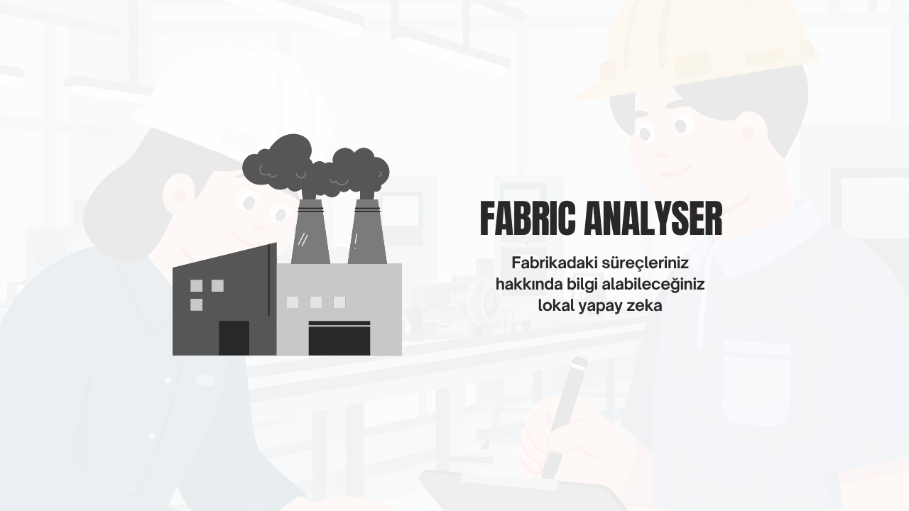
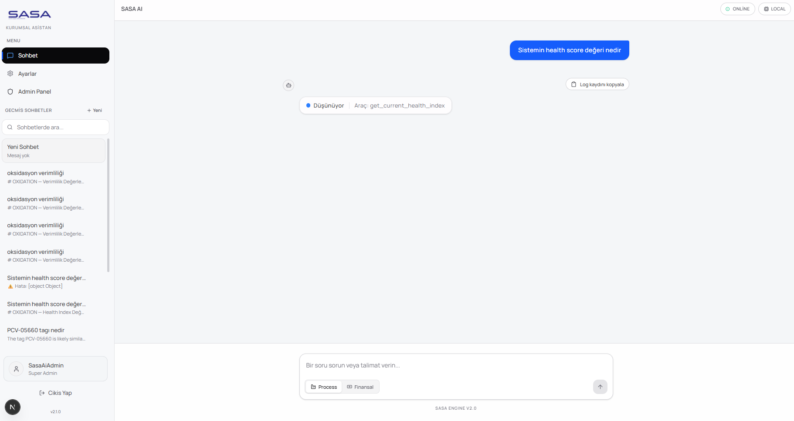
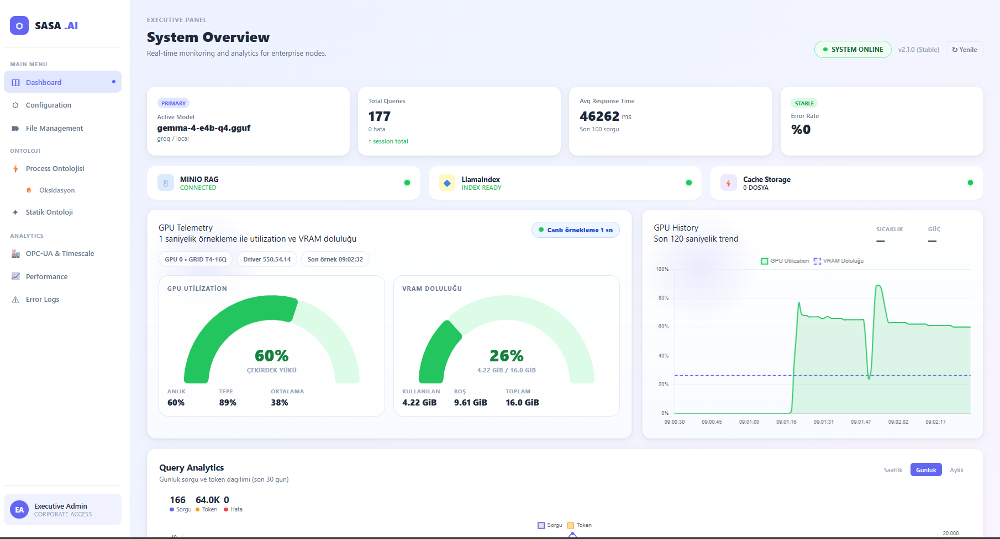

Operasyon bilgisi bağlamdan kopuyor
Fabrika verileri, alarm kayıtları ve ekipman ilişkileri ayrı sistemlerde kaldığında karar almak için gereken bağlam kaybolur.
Fabrika verileri, alarm kayıtları ve ekipman ilişkileri ayrı sistemlerde kaldığında karar almak için gereken bağlam kaybolur.
Proses ontolojisi, deterministik veri sorguları ve kurumsal RAG akışı birleştirilerek Türkçe analiz ve aksiyon önerisi üreten bir platform tasarlandı.
Health index, anomali takibi, sensör durumları ve yönetim paneli aynı çatı altında okunabilir hale getirildi.

FABRİKA ANALYSER, fabrika operasyonları için özel olarak geliştirilmiş Türkçe yapay zeka platformudur. Ontoloji tabanlı operasyon inceleme ve aksiyon önerisinin yanı sıra, gelişmiş RAG tabanlı veri sorgulama yeteneklerine sahiptir.

